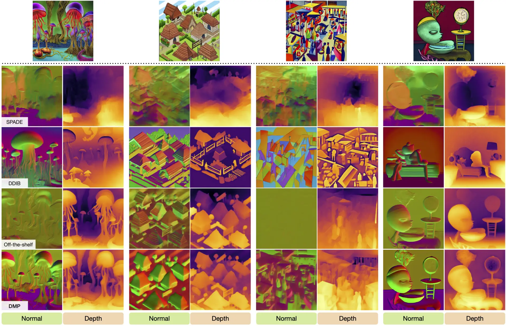
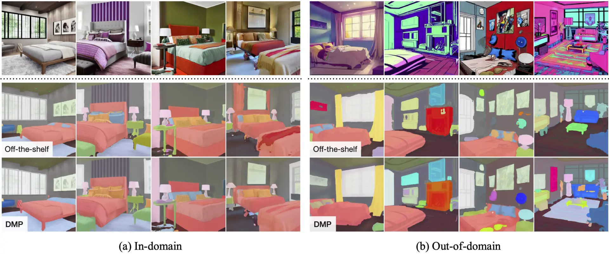

Contents generated by recent advanced Text-to-Image (T2I) diffusion models are sometimes too imaginative for existing off-the-shelf property semantic predictors to estimate due to the immitigable domain gap. We introduce Diffusion Models as Prior (DMP), a pipeline utilizing pre-trained T2I models as a prior for pixel-level semantic prediction tasks.
To address the misalignment between deterministic prediction tasks and stochastic T2I models, we reformulate the diffusion process through a sequence of interpolations, establishing a deterministic mapping between input RGB images and output prediction distributions. To preserve generalizability, we use low-rank adaptation to fine-tune pre-trained models. Extensive experiments across five tasks, including 3D property estimation, semantic segmentation, and intrinsic image decomposition, showcase the efficacy of DMP. Despite limited-domain training data, the approach yields faithful estimations for arbitrary images, surpassing existing state-of-the-art algorithms.
To view this video please enable JavaScript, and consider upgrading to a web browser that supports HTML5 video
We train the model with 10K bedroom images and evaluate out-of-domain performance of 3D properties and intrinsic images with diverse scenes and arbitrary images. Out-of-domain segmentation is evaluated with bedroom images in various styles. DMP gives faithful estimation, even on the images where the off-the-shelf schemes fail to handle.


Surface normals and depths facilitate many vision tasks. We show the examples of 3D photo inpainting. Compared to the default depth estimator (left), the resulting videos produced with the depth maps generated by DMP (right) have more accurate depth relationships between the objects.
@article{lee2023dmp
author = {Lee, Hsin-Ying and Tseng, Hong-Yu and Lee, Hsin-Ying and Yang, Ming-Hsuan},
title = {Exploiting Diffusion Prior for Generalizable Pixel-Level Semantic Prediction},
journal = {arXiv preprint arXiv:},
year = {2023},
}